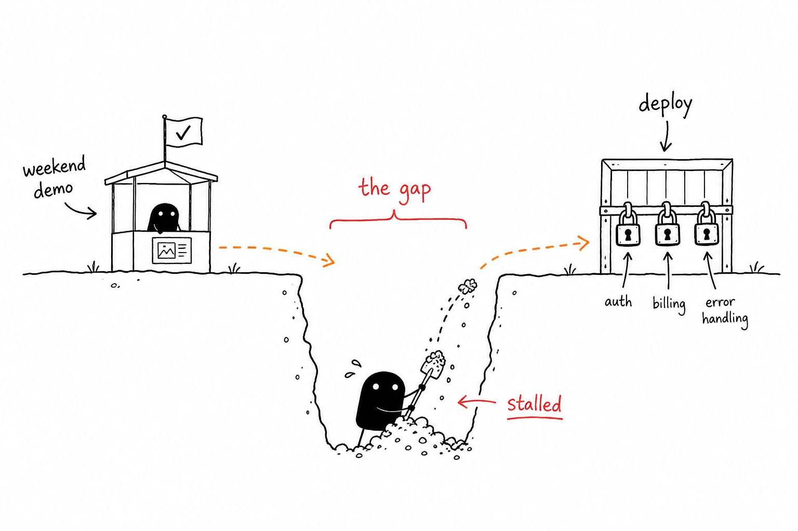
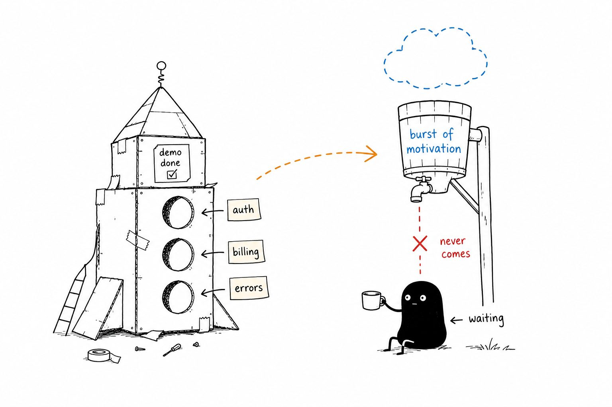

Looks
Uneven black silhouette. Blank white eyes. Tiny legs. Slightly wobbly, hand-drawn — never polished mascot.
Xiaohei小黑
Absurdist hand-drawn illustrations for English articles — generated by a Cursor skill.
Not PPT. Not cute mascots. A blank-eyed black creature earnestly stuck inside your metaphor.
The character
Xiaohei (小黑, “little black”) is a solid-black creature with white-dot eyes, thin legs, and a deadpan expression. He is not decoration. In every frame he performs the core action — shoveling a gap, waiting under a dry spout, hauling, stuffing, guarding.
Uneven black silhouette. Blank white eyes. Tiny legs. Slightly wobbly, hand-drawn — never polished mascot.
Very earnest, a little absurd. Dry humor. Clumsy but not dumb. Like he holds a real job inside a whiteboard sketch.
Carry the metaphor. If you can remove him and the idea still reads, he failed — rewrite until he’s the subject.
The skill
xiaohei-illustrations is a Cursor agent skill. Paste an article (or a single paragraph), and it designs shot lists then generates 16:9 body images: pure white background, black line art, sparse red / orange / blue handwritten labels.
Live example
We fed the skill this paragraph and asked for two illustrations:
Most side projects die between the demo and the deploy. The demo takes a weekend; the deploy needs auth, billing, and error handling — so the project stalls in the gap, waiting for a burst of motivation that never comes.

